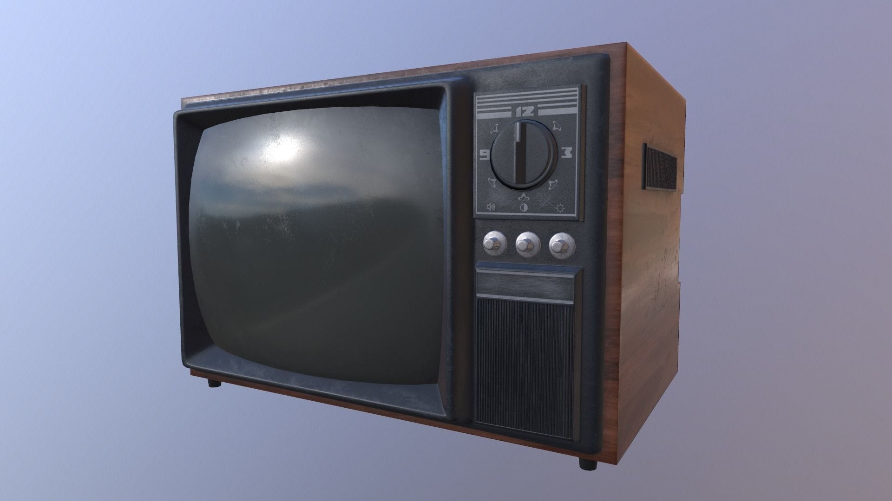
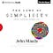

The old TV model
A model of systemic simplicity


Yesterday this tweet
from Paul Graham of YC combinator reminded me a speak of the Pr Andrew S. Tanenbaum
the creator of the Operating system Minix who also claims to be the one who provided the base kernel of Linux to Howard Linus. In his talk, the professor gave his core design objective with Minix which is what I call The old TV model. This principle is that computers should be as easy as the old TVs we used to have in our home. When we plug an old TV and set up the Tv channels, it works almost ever without us coming back for updating or tweaking the systems to be working. OLD TVs were simple like radio but As I noticed, these TVs ended being Computers and became more and more complex to set up and to use.
The simplicity of usage is a design feature that made many tech consumer products successful but simplicity is not about cutting out functionalities, it's more about refining the design by using empathic thinking that allows us to know what the user wants and need is not what us engineers and designers want and need. The products that we design and build are not for us so the last framework, the last database, the last language be it Rust or Scala matter less. What matters is if users will know how to use it almost instinctively. A silicon valley adage used to say If our grandparent can use it without us explaining how to then the tech product is well designed.
it can help to read this book to go deeper into this topic

PS: Get my coming book Gamestop anatomy of a stock bubble by clicking here